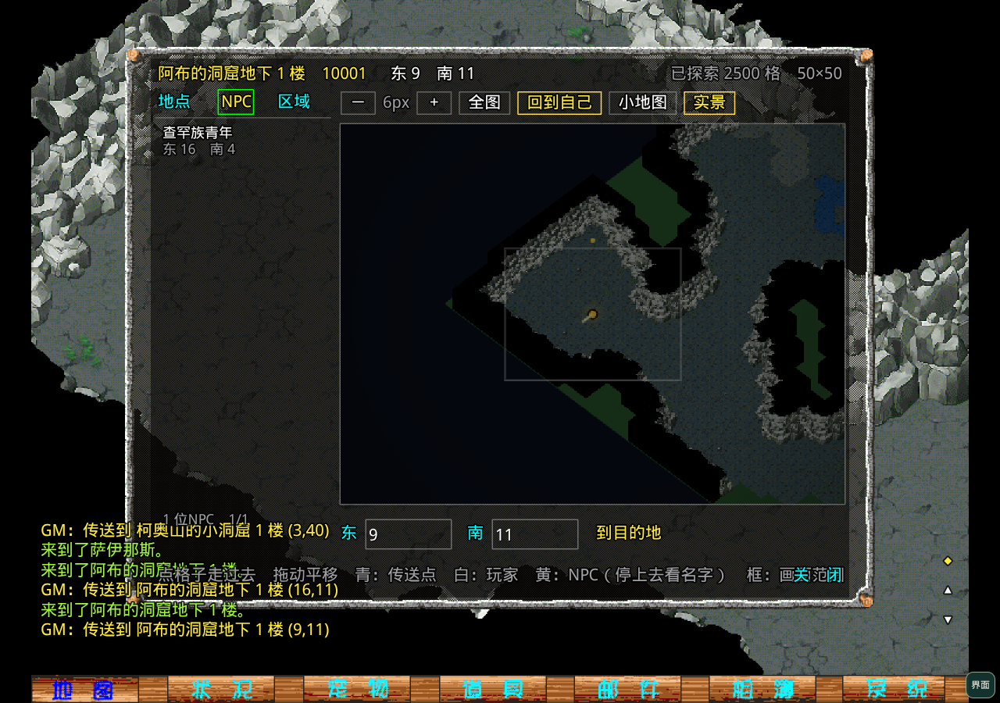
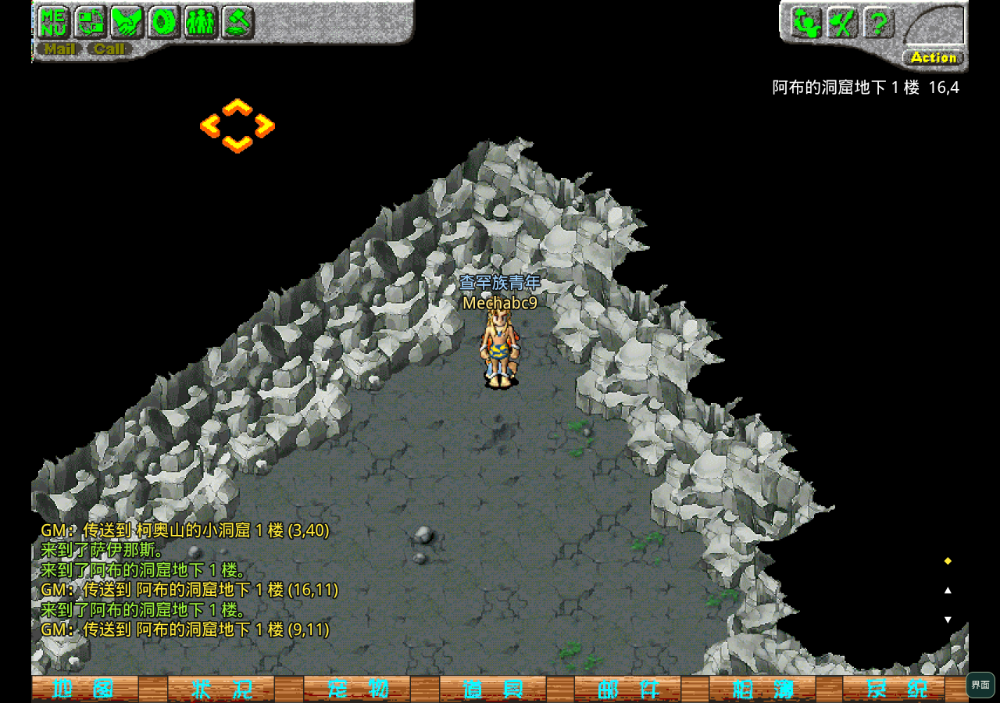
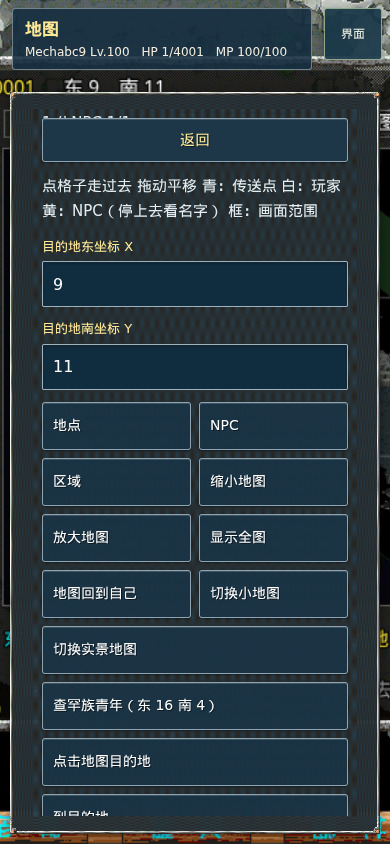
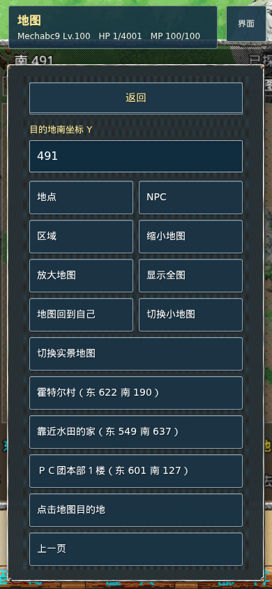

小地图入口目录、当前楼层NPC与完整名称排版；以真实资源、匹配Linux程序和Chromium证据交付。
不聚合洞窟／世界，换层释放旧NPC，迟到响应隔离。
可走格精确到达；墙／传送点占位使用可达相邻普通格并显示坐标。
地点、NPC、区域均保留全名，内容高度决定页数，原生触屏标签完整。
分帧A*冻结地图修订；手动、锁定、跟随、换层取消并释放缓冲。




Linux AMD64 SHA-256474c883b4e9d16b542d96dd76ec2be4adb9f50cde191ebfdbccc454b842fd441
ZIP：4380个文件／42228859字节；完整替换上一版，未加入Assets原目录、凭据或数据库。